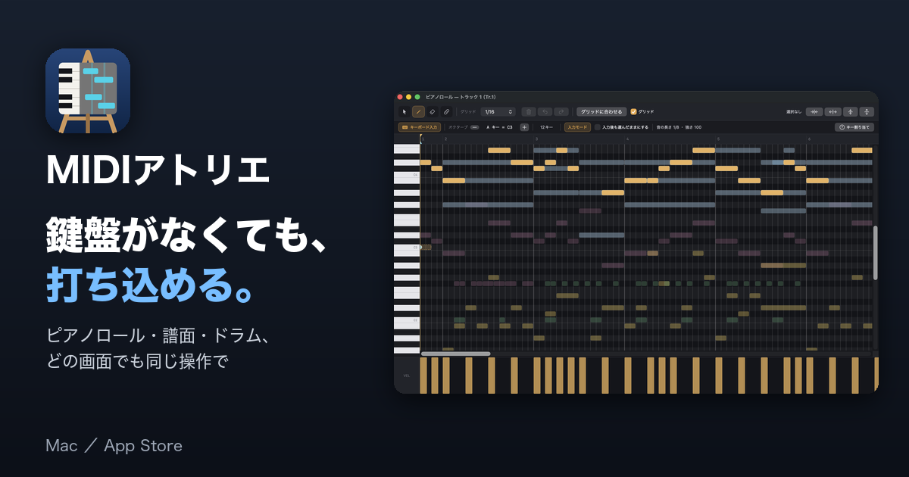

MIDIアトリエ

2026年11月に、アプリの名前を「MidiAtelier」から「MIDIアトリエ」に変えました。読み方は同じ「ミディアトリエ」で、機能と使い方は変わりません。
MIDIアトリエ（ミディアトリエ）は、パソコンのキーボードだけで曲を打ち込める macOS 用の MIDI シーケンサーです。ピアノロール・譜面・ドラムのます目の3つの画面で編集でき、標準MIDIファイルの読み書き、音（WAV / M4A）・譜面（PDF）・MusicXML への書き出し、外部 MIDI 音源への出力に対応しています。
はじめかた
- アプリを起動すると、トラック（チャンネル）の一覧が出ます。「Ch 追加」で音を入れる先を作ります。
- 打ち込む画面を開きます。ピアノロールは ⌘2、ドラム入力は ⌘3、譜面は ⌘4 です。
- ペンの道具を選ぶと入力モードになります。パソコンのキーボードで音を置くか、マウスでクリックして置きます。
- スペースキーで再生します（入力モードのときは、アローの道具に切り替えると再生モードになります）。
音源をつながなくても、macOS 内蔵の音源で鳴ります。
操作の一覧はアプリの中にあります
キーの割り当ては、打ち込みの画面にある「キー割り当て」ボタンで確認できます。アプリの更新で変わることがあるため、このページには載せていません。
よくある質問
- Q. 音が鳴りません
- 画面下の「MIDI 出力先」を確かめてください。「内蔵音源（GM）」を選ぶと、外部の機材がなくても鳴ります。外部の音源を選んでいるときは、機材の電源・接続・音量も確かめてください。トラックの「M」（ミュート）が点いていないか、ほかのトラックの「S」（ソロ）が点いていないかも確認してください。
- Q. 鍵盤（MIDI キーボード）は必要ですか
- 要りません。パソコンのキーボードとマウスだけで打ち込めます。MIDI キーボードをつないだ場合は、演奏を録音することもできます。
- Q. 作った曲を他のソフトで開けますか
- 「ファイル」メニューから標準MIDIファイル（.mid）として保存できます。楽譜作成ソフトへ渡すときは MusicXML、印刷や共有には PDF、音として渡すときは WAV / M4A に書き出せます。
- Q. 譜面はどこまで書けますか
- 連桁・付点・連符・タイ・2声・臨時記号（ダブルシャープ／ダブルフラットを含む）を自動で組みます。強弱記号、クレッシェンド、スラー、アクセント、弱起、途中の転調や拍子・音部記号の変更にも対応しています。総譜とパート譜を PDF に書き出せます。
- Q. 外部の MIDI 音源のパラメーターを変えられますか
- 音源エディター（⌘5）で、音色・音量・パン・フィルター・エンベロープ・リバーブなどを調整できます。XG に対応した音源では、その設定を曲に書き込んで保存できます。macOS 内蔵の音源では、一部のパラメーターは効きません。
- Q. 保存していない変更はどうなりますか
- 同じファイルを開き直そうとしたときは、確認してから読み込みます。⌘Z で元に戻せます。
- Q. ファイルはどこまで読み書きしますか
- 「開く」「保存」で選んだファイルと、Finder でダブルクリックして開いたファイルだけです。それ以外の場所には触れません。外部との通信も行いません。
動作環境
- macOS 13（Ventura）以降
- MIDI 音源は任意（無くても内蔵音源で鳴ります）
お問い合わせ
ご質問・ご要望・不具合のご連絡は emc.hs07@gmail.com までお願いします。
 文字アトリエ
文字アトリエ PDF PageRebind
PDF PageRebind Futamado
Futamado CellStay
CellStay ひきだしメニュー
ひきだしメニュー PhotoParcel
PhotoParcel PhotoParcel Select
PhotoParcel Select チャプたん
チャプたん チャプたんブックマーク
チャプたんブックマーク 事務電卓
事務電卓 Tecola
Tecola グッズ注文まとめ
グッズ注文まとめ